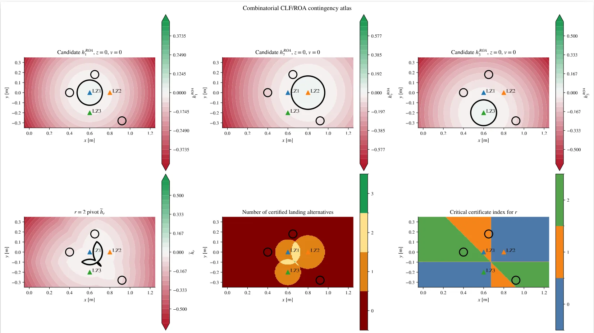
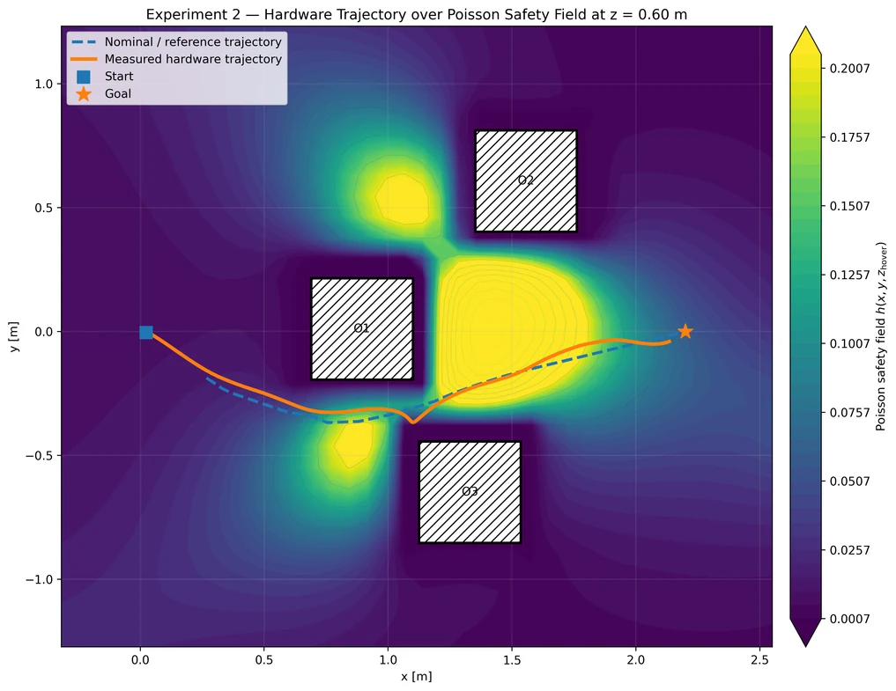
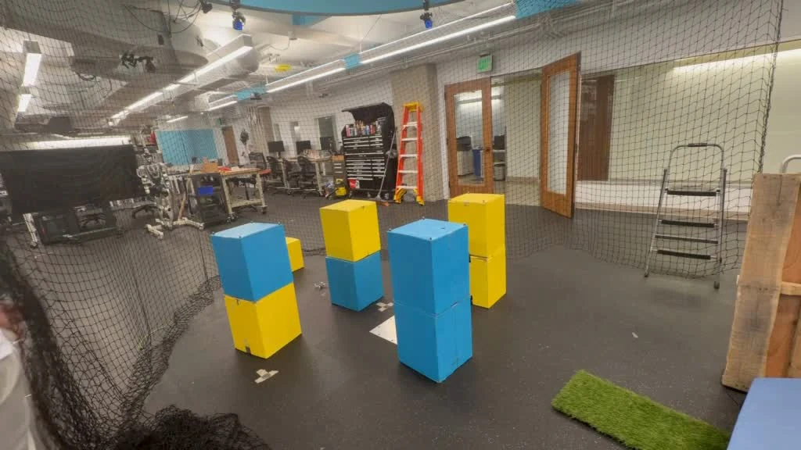
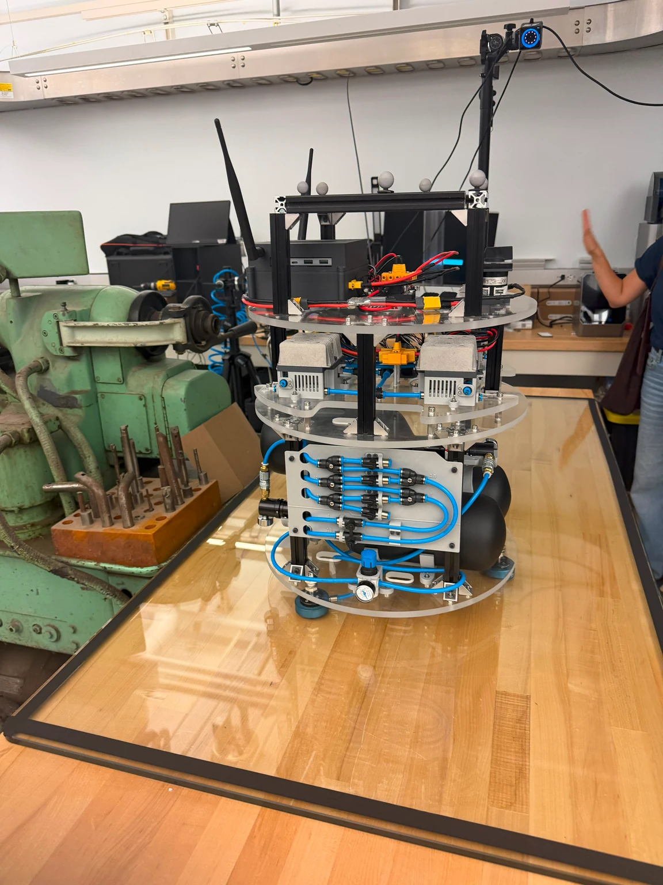
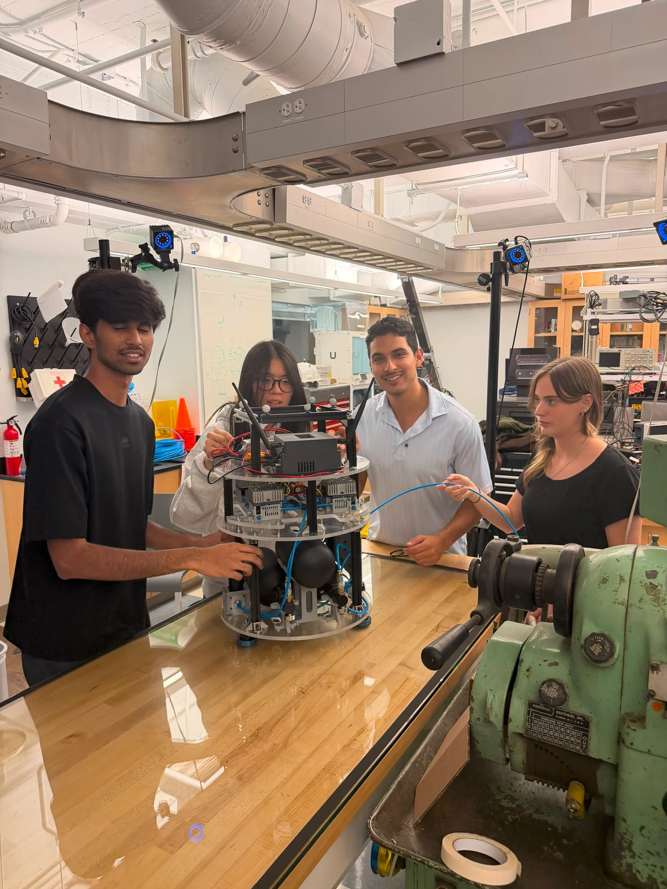
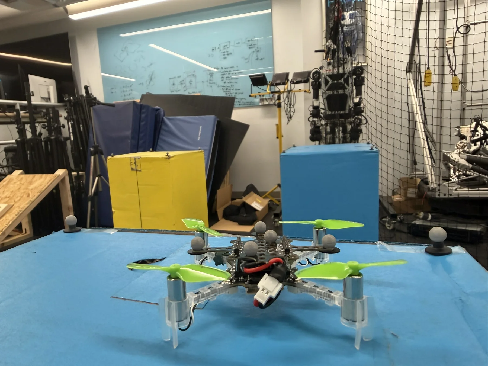
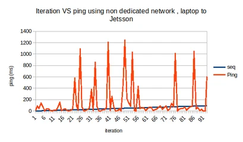
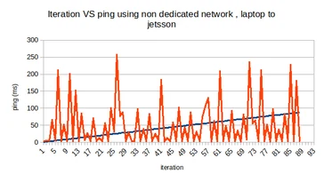
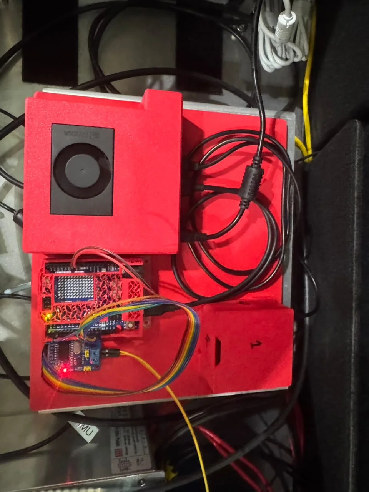

California Institute of Technology — AMBER Lab
HOCBFCLFMPCPoisson PDELQR funnels
Open technical dossier ↗
This page separates the scientific question, theory, software architecture, experimental evidence and measured results for each research experience. Click a record to open the full technical dossier.


A modular autonomy architecture that combines nominal task control, smooth environmental safety fields, barrier/Lyapunov certificates and multi-target contingency preservation.
I developed and experimentally evaluated the control architecture for a Mars-analog helicopter landing problem with changing obstacles and multiple candidate landing zones. The work coupled a nominal MPC command with Poisson-derived obstacle representations, high-order control barrier constraints, Lyapunov/region-of-attraction certificates and chained ellipsoidal funnels. In parallel, I supported simulation and hardware-validation workflows for ATMOS, a free-flying spacecraft testbed.
MPC generates the task-seeking command before safety modification. At every control step it solves a constrained finite-horizon tracking problem and applies only the first optimized input.
Obstacle geometry is encoded as a smooth scalar field over free space rather than requiring one hand-designed analytical barrier per obstacle.
The field value, gradient and Hessian then become local geometric information for the safety layer.
Safety and convergence are handled separately: the HOCBF constrains admissible control near unsafe geometry, while CLFs quantify attraction to candidate landing zones.
Connected ellipsoidal cells act as local regions of attraction / safe corridors. Cells grow in free space until limited by obstacles or workspace boundaries and are required to overlap, yielding a continuous corridor.
Each candidate landing zone has a Lyapunov-based reachability margin. Rather than committing immediately to one target, the controller preserves at least r of p viable alternatives.
The safety filter is implemented as a small optimization problem over acceleration commands plus CLF slack / contingency variables. Cross-backend checks compared native compiled solvers against independent SciPy implementations before hardware tests.







Separately from the Mars-analog rotorcraft work, I contributed to ATMOS — the Autonomy Testbed for Multi-purpose Orbiting Systems — through ROS 2/Gazebo/PX4 simulation, motion-capture interfaces, IoT instrumentation, repository integration and hardware-validation workflows.




A digital-twin research framework that couples UAV motion, relay topology, radio feasibility, fault injection and service recovery in one runtime loop.

The swarm is represented as a directed graph whose active nodes and links change with motion and failures.
Sionna provides path-loss-aware link metrics. The runtime exposes received power, noise floor, SNR, capacity and propagation delay for each candidate hop.
Packets advance only when geometry and communication thresholds are simultaneously satisfied.
Chain, parallel and forest modes are separate service processes: a chain is series-reliable, parallel branches advance independently, and forest topology provides subtree-level redundancy.
Failed nodes are removed from the active set, standby nodes can be promoted, and topology is recomputed from surviving feasible links. The manuscript formalizes a failure-monotone restoration property whenever a feasible survivor path exists.
Availability, outage duration and recovery time are measured from the live feasibility state and event log rather than inferred after the run.
I worked on the SWARMSYM framework integrating ROS 2, Isaac Sim, PX4/Pegasus and Sionna, together with Mission Control, topology editing, live telemetry and fault/recovery workflows. Comparative simulations were designed against AirPAW-derived data / scenarios to check whether communication-performance trends remain physically plausible. The current manuscript reserves final quantitative claims until the full validation campaign is complete.


A system-level sensing stack built to make calibration, timing, networking, visualization and future sensor fusion reproducible before deploying higher-level autonomy.

Bias and noise are treated explicitly before higher-level fusion.
The real-time attitude layer used a Madgwick/Mahony-style quaternion filter. In Madgwick form, gyroscope propagation is corrected by a gradient-descent term from accelerometer / magnetometer residuals.
The project evolved through several transports rather than assuming one network stack: wired USB for bring-up, Bluetooth SPP for mobile sensing, ROS 2 / Fast DDS QoS profiling, and WebSocket + Tailscale for remote visualization.
The validated platform is the sensing backbone for IMU–GNSS calibration, EKF/UKF fusion and visual-inertial / SLAM integration. These future layers are distinguished from what was already implemented and measured.






Flight-dynamics modeling, multi-Pitot sensing, CFD and post-flight reconstruction for a recoverable atmospheric descent payload.

The reconstruction couples gravity, atmospheric density and drag. A simplified translational drag magnitude is
Calibrated dynamic pressure provides an independent estimate of freestream speed.
A four-port Pitot arrangement was used to capture directional response. Wind-tunnel tests established which ports aligned with the freestream and quantified cross-axis behavior before flight.
CFD streamlines and pressure fields were compared with tunnel measurements and the final flight data to interpret stagnation regions, wakes and sensor interference.


An end-to-end pipeline from Earth-observation imagery to discrete air corridors, a registered 3-D city and ROS 2/Gazebo multi-UAV simulation.

UTM and urban-air-mobility algorithms need realistic geometry and a machine-readable navigation space. Manually constructing both a city model and a corresponding planning representation is slow and error-prone, so the project linked them through one spatial reference.
Copernicus multispectral imagery is cropped, georeferenced and segmented into built-up, free and restricted regions. The result becomes a raster occupancy representation.
Free corridor pixels are converted into nodes / intersections and sequences of cells become candidate aerial routes. Altitude layers turn 2-D paths into 3-D waypoints.
Building footprints are extruded in Blender under the same spatial reference, preserving the mapping between graph cells and 3-D geometry.
UAV models receive the generated waypoint lists while ROS 2 handles setpoints, telemetry, logging and visualization for conflict-detection, sequencing and rerouting experiments.